Ders 6
Bir önceki derste cycloid konusunu işlemiştik.
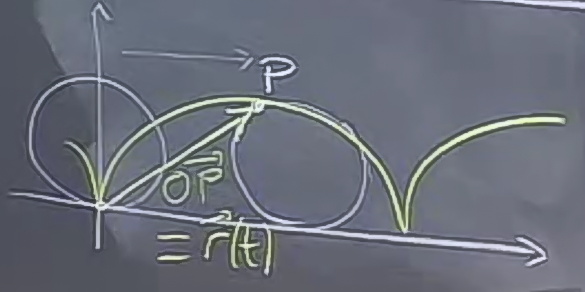
Hareket eden bir noktanın pozisyonunu üç boyutta zamana bağlı olarak aşağıdaki gibi gösterebiliriz.
$$ (x(t), y(t), z(t)) $$
Bu noktayı takip etmenin diğer yollarından biri onu pozisyon vektörü olarak görmektir, ki o zaman vektörün bileşenleri noktanın kordinatları olur.
$$ \vec{r}(t) = < x(t),y(t),z(t) > $$
vektörü başlangıç (origin) noktası (0,0,0) ve bitiş noktası bizim noktamızın konumu olan bir konum vektörünü temsil eder (resimde $\vec{OP}$ ile gösterilmiştir).
Cycloid probleminde tekerlek yarıçapını 1 alalım ve birim hızda ilerliyor olalım, ki böylece açıyı ($\theta$) ve zamanı ($t$) birbiri cinsinden temsile edebilir hale gelelim.
$$ \vec{r}(t) = < t-\sin(t), 1-\cos(t) >$$
Şimdi, noktanın pozisyonunu zaman açısından bildiğimize göre, onun değişimini inceleyebiliriz, mesela hızına, ivmesine bakabiliriz. İlk önce hıza bakabiliriz. Fakat, hızı bir vektör olarak hesaplamadığınız sürece, hız sadece bir sayıdan ibaret kalır, ayrıca eğer şu içinde GPS olan şatafatlı spor arabalarından birine sahip değilseniz, hızınızın "hangi yönde" olduğunu bulamazsınız. Sadece "gittiğiniz yönde" (her ne yöne gidiyorsanız) ne kadar hızlı olduğunuzu bulabilirsiniz.
O zaman biz hızımızı hesaplarken hem yönü, hem de hızı aynı anda düşünmeliyiz. Bu demektir ki vektör kavramı tekrar işimize yarayacak. Hızı vektör olarak hesaplayabiliriz.
Bunu nasıl yaparız? Pozisyon vektörünün zamana göre türevini alabiliriz. Temelde bunun sebebi hız kavramının tanımından kaynaklanır. Hız, herhangi bir uzayda zamana bağlı olarak pozisyonun değişim miktarıdır (ve elbette pozisyon belli bir yönde değiştiği için hızın bir yönü de vardır). Ve kalkülüs kullanarak, pozisyon vektörünün zamana bağlı türevini (değişimini) alırsak tam olarak hızı buluruz.
$$ \vec{v} = \frac{d\vec{r}}{dt} $$
Bu tür bir türevi bu derste ilk kez görüyoruz, ilk kez bir vektörün türevini alıyoruz. Bu şekilde türev almak demek, o vektörün bileşenlerinin teker teker türevini almak demektir. Yani
$$ = <\frac{dx}{dt}, \frac{dy}{dt}, \frac{dz}{dt}> $$
Cycloid örneğine dönersek
$$ \vec{r}(t) = < t-\sin(t), 1-\cos(t) >$$
ifadesinin türevini alırsak ne olur?
$$ \vec{v} = \frac{d\vec{r}}{dt} = < 1-\cos(t),\sin(t) >$$
İşte bu türev bize hangi yönde ve ne kadar hızlı gittiğimizi gösteriyor.
Bu arada bir vektörün büyüklüğünün (magnitude) her zaman mesafesel, uzaklıksal anlamı olmayabileceğini de görmüş oluyoruz. Hız kavramı bir orandır, katedilmiş bir mesafe, bir yer değildir, $t$ anında bir yönde olan bir büyüklüktür. Fakat yine de bir büyüklüktür, bir yönü vardır, ve bu sebeple vektörler ile temsil edilebilir.
Problemimize dönelim. Önceki derste tekerlekte izlenen noktanın en alta gelip yükseldiği sıralarda hareketinin nasıl olduğunu irdelemiştik. Şimdi bu konuyu hız kavramını kullanarak incelemeye uğraşalım. Üstteki vektöre $t=0$ koyarsam, ne olur? Sonuç $< 0,0 >$, yani $\vec{v} = 0$. Tabii ki nokta $t=0$ öncesi hareket ediyor, sonra da ediyor, yani bir hızı var, sadece "o anda" hızı yok.
Peki hız vektör olarak daha fazla bilgi veriyor olmasına rağmen, ben yine de klasik anlamda hızı, yani o tek sayıyı elde etmek istiyorsam ne yaparım? Hız vektörünün büyüklüğünü hesaplarım, $|\vec{v}|$.
$$ |\vec{v}| = \sqrt{ (1-\cos t)^2 + \sin^2t } $$
$$ = \sqrt{ 1-2\cos t + \cos^2t + \sin^2t } $$
$$ = \sqrt{ 2-2\cos t } $$
Bu formüle bakarak hızın nerede en fazla, en az olduğunu hesaplayabiliriz. Eğer $t=0$ ise, sonuç sıfır olur. $t=\pi$ ise elimizde $\sqrt{4} = 2$ vardır, bu an noktanın tekerleğin en üstünde olduğu andır, bu an aynı zamanda en hızlı hareket ettiğimiz de andır. Hatta bu hız tekerleğin sağa doğru yatay gidiş hızının iki katıdır, tekerleğin sağa doğru birim hızda ilerlediğini söylemiştik, fakat nokta bunun üstüne bir de merkeze göre bir dönme hareketi içinde, ve bu iki etki birbirine eklenerek $2$ hızına yol açıyor.
O nokta tepe noktasından aşağı inmeye başlayınca tabii ki noktamız dönüşün "geriye doğru" olan etkisiyle toplamı hızında düşme yaşıyor.
İvme
Bu konuyu işlemeden önce klasik olarak bilinen ivme kavramı ile burada kullanacağımız ivme kavramı ile ciddi uyuşmazlıklar olduğunu belirtmeliyim. Klasik anlayışta ivme mesela bir arabada giderken "hissettiğimiz şey" bizi koltuğa iten kuvvet, hızdaki değişim (hızın türevi) olarak bilinir ve eğer bir arabada saatte 40 km ile gidiyorsam, ivme yok denir. Fakat şimdi bu arabanın bir virajdan döndüğünü farzedelim, bu durumda bir kuvvet hissederiz, hala saatte 40 ile gidiyor olabilirim, ama bir ivme vardır. Burada aslında yana doğru bir hızlanma / ivme sözkonusudur. O zaman yine vektör kavramını kullanmamız lazım.
İvme vektörünü şöyle belirtelim:
$$ \vec{a} = \frac{d\vec{v}}{dt} $$
Fizikteki ivme tanımı da budur, $F = ma$ derken kastedilen $a$ işte bu $a$'dır. Bir vektördür.
Cycloid'e dönelim.
$$ \vec{v} = <1-\cos(t),\sin(t)>$$
Türevi alalım
$$ \frac{d\vec{v}}{dt} = <\sin(t), \cos t>$$
$t=0$ noktasında ivme nedir? $< 0,1 >$.
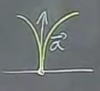
Yani $t=0$ anındaki ivme bir birim vektör, ve yönü tam yukarıya doğru. Bu ilginç bir şey, o anda hız sıfır, fakat bir ivme mevcut.
Bu arada, hemen belirtelim
$$ \bigg|\frac{d\vec{r}}{dt}\bigg| \ne \frac{d|\vec{r}|}{dt}$$
Yani bir vektörün türevinin büyüklüğü, o vektörün büyüklüğünün türevi ile aynı şey değildir. Eşitsizliğin sağındaki kavram zaten çoğunlukla pek ise yarar bir şey değildir, hesaplanabilir, biraz saç baş yoldurabilir ama mümkündür, fakat çoğunlukla kullanılmaz.
Eğri Uzunluğu (Arc Length)
Eğri uzunluğu bir eğri üzerinde ne kadar yol katettiğimizi gösteren bir büyüklüktür. Mesela bir arabadaki ne kadar yol katettiğinizi gösteren kilometre sayacı bunu arabanın hızını belli bir zaman üzerinden entegre ederek hesaplıyor.
$s$ = bir yol üzerinde katedilmiş mesafe
Bunun anlamı olması için tabii ki bir sabit, referans noktası düşünmeliyiz. Orijin noktası bu nokta olabilir. Bu arada $s$ referans noktasının neresinde olduğumuza göre negatif olarak ta hesaplanabilir. Referansa kadar eksi, sonrası artı olabilir mesela.
Peki $s$ ile $t$, yani eğri uzunluğu ve zamanı nasıl birbirine bağlarız?
$$ \frac{ds}{dt} = \textrm{ hız } = |\vec{v}| $$
Yani birim zamanda katedilen eğri uzunluğu hızdır [1, sf. 932].
Ama açık olmak gerekirse, aslında türevin mutlak değerini (absolute value) almak daha doğru olur (dikkat, vektör büyüklüğü işareti değil, mutlak değer işareti bu sefer)
$$ \bigg| \frac{ds}{dt} \bigg| = \textrm{ hız } = |\vec{v}| $$
Niye? Belki bir eğri üzerindeyiz ama o eğri üzerindeki hareketimiz bir ileri bir geri şeklinde. Bu durumda eğri uzunluğunu sürekli saymak istemeyiz, onu "çoğalan (ileri), azalan (geri)" türünden bir büyüklük olarak görmek isteriz.
Eğri uzunluğu hesabı için hızı zaman üzerinden entegre ederiz. Mesela bir cycloid'in (resimde sarı ile gösterilen) bir türünün uzunluğu ne kadar diye hesaplamak istiyorsak,
$$ \vec{v} = \sqrt{ 2-2\cos(t) } $$
ifadesinin 0 ile $2\pi$ arasında entegralini almamız lazım.
$$ \int_o^{2\pi} \vec{v} = \int_o^{2\pi} \sqrt{ 2-2\cos(t) } \mathrm{d} t $$
Açıkça söylemek gerekirse bunun entegrali analitik olarak nedir bilmiyoruz, ama ileriki derslerde bu hesabı yapmak için fiyakalı bir numara göreceğiz.
Gidişatın Birim Teğet Vektörü
Notasyonda bu kavram çoğunlukla $\hat{T}$ olarak gösterilir. Şapka var çünkü vektör birim vektör. $T$ çünkü "teğet".
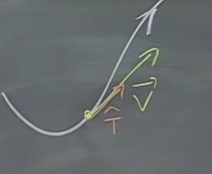
Vektör $\vec{v}$ gidişata (trajectory) zaten teğettir (dikkat, bu illa pozisyon vektörü $\vec{r}$'a dik olacak anlamına gelmez, detaylar için bu dersin sonundaki örnek sorulara bakın). $\hat{T}$ bir anlamda bu vektörün sadece yönüdür, o zaman $\vec{v}$'nin yönü bize gerekli, demek ki onu birim vektör haline getirirsek, $\hat{T}$'yi elde etmiş oluruz.
$$ \hat{T} = \frac{\vec{v}}{|\vec{v}|} $$
Bir sürü kavram birikti. Bunların birbiriyle bir alakası olmalı, onlardan bahsedelim.
$$ \vec{v} = \frac{d\vec{r}}{dt} = \frac{d\vec{r}}{ds}\frac{ds}{dt} $$
Üstte zincirleme kanununu (chain rule) kullandık.
Biraz önce gördük ki $ds/dt = |\vec{v}|$.
Eğer
$$ \vec{v} = \frac{d\vec{r}}{ds}|\vec{v}| $$
işe, vektör $\vec{v}$'nin büyüklüğünü öyle bir şey ile çarpıyorum ki sonuç olarak vektörün kendisi ortaya çıkıyor. O şey ne olabilir? Tabii ki vektörün birim vektör olarak gösterilecek yönü olabilir. Bu birim vektörü zaten hesaplamadık mı? Bu vektör $\hat{T}$'den başkası değil.
$$ \vec{v} = \hat{T}|\vec{v}| $$
ya da
$$ \vec{v} = \hat{T}\frac{ds}{dt} $$
Peki sezgisel olarak düşünürsek, $d\vec{r}/dt$ niye $\hat{T}$'ye eşit olmalı? Alttaki grafiklere bakalım.
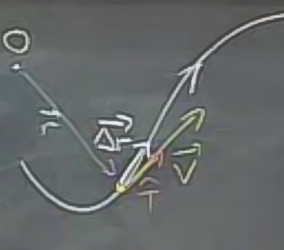
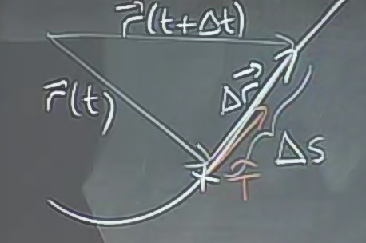
Yerimizi $t$ anında $\vec{r}(t)$, $\Delta t$ kadar bir adım atıyoruz, ve $\vec{r}(t+\Delta t)$ noktasına geliyoruz. Bu noktada eğri üzerinde katedilen mesafe $\Delta s$, o zaman
$$ \frac{\Delta s}{\Delta t} \approx hız $$
Yer vektörümüzün değişimi ise
$$ \Delta \vec{r} \approx \hat{T} \Delta s $$
İki tarafı $\Delta t$ ile bölersek
$$ \frac{\Delta \vec{r}}{\Delta t} \approx \hat{T} \frac{\Delta s}{\Delta t} $$
ve $\Delta t \to 0$ olarak limitini alırsak, o zaman üsttekiler türev haline gelir, yaklaşıksal işaret eşitlik olur. Yani
$$ \frac{d\vec{r}}{dt} = \hat{T}\frac{ds}{dt} $$
Peki bu tür konularda vektörleri kullanalım. Aslında şimdiye kadar gördüklerimizi diğer yollarla da temsil edebilirdik. Fakat vektör "dili" özellikle hareketleri modellerken oldukça faydalı oluyorlar.
Örnek - Kepler'in İkinci Kanunu
Kanun 1609'da keşfedildi, yani pek yeni bir gelişme olduğu iddia edilemez. Kepler gezegenlerin hareketini modellemeye uğraşıyordu. Bazı insanlar gezegenler mükemmel bir çember içinde dönerler, vs. diyordu. Kepler gezegenlerin yörüngesinin çember değil elips (ellipse) olduğunu öne sürdü. Kepler'in Kanunu şöyle der:
Gezegenlerin hareketi bir düzlem üzerindedir, güneşten gezegene çekilebilecek bir hayali çizginin kapsadığı alanın büyümesi / aşılması sabit bir orandadır. Bu ilginç bir kanun çünkü bir kez yörüngenin şeklini bilirsek, o yörünge üzerinde ne kadar hızlı gidebileceğimizi bize söylüyor.
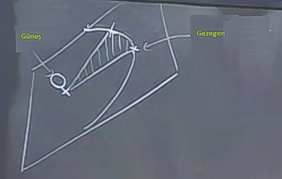
Üstteki şekle bakarsak, güneş etrafında bir gezegen var, ve katedilen yol taralı şekilde çizili. Kepler Kanunu şu anlama gelir, katedilen alan zamana orantılıdır, eğer gezegen güneşe daha yakın olsa, daha hızlı gitmek zorundadır, uzak olsa, daha yavaş gitmek zorundadır, ki katedilen alanın zamana oranı aynı kalsın. Niye? Eğer yakın olursak, güneşe direk mesafe azalacaktır, boydan kaybettiğimizi diğer yönden kazanmamız gerekir, yani aynı zamanda aynı alanı katetmek için bu sefer yöründe üzerine daha hızlı gidilmelidir, ki aynı alana erişebilelim. Tabii gezegenlerin aklı yoktur, böyle olsun diye uğraşmazlar, Kepler gözlemlerini yaparken, modellerken değişmeyen bu büyüklüğü keşfetmiştir, ve sayede bazı hesapları temiz sekilde yapabilmesi mümkün olmuştur.
Biz de şimdi bu kanunu, mekanik / fizikten bugün bildiklerimizi kullanarak doğrulamaya çalışacağız. Newton, ki 1600'lu yılların sonlarında ortaya çıktı, bu durumu yerçekimi formülleri ile açıklamayı başardı.
Şimdi vektörler kullanarak bu modeli yaratacağız ve Kepler'in onları kullanarak alan hesabının aslında ne kadar doğal / bariz olduğunu göreceğiz. Fakat Kepler bu kanunu ortaya atarken işler hiçbir bu kadar bariz değildi!
Tekrar bir pozisyon vektörü $\vec{r}$ yaratalım, başlangıcı güneş, bitiş noktası gezegen olsun, katedilen yol $\Delta \vec{r}$ olsun. İlerlemeden önce iki vektörün $\vec{r}_1$ ve $\vec{r}_2$ gibi iki vektörün farkının $\Delta r$ olup olamayacağını kontrol edelim. Birinci vektörü $\vec{A}$, ikinciyi $\vec{B}$ olarak görürsek, $\vec{B} - \vec{A}$ nasıl hesaplanır? Vektör toplamayı biliyoruz, $\vec{B} - \vec{A}$ aslında $\vec{B} + (-\vec{A})$.
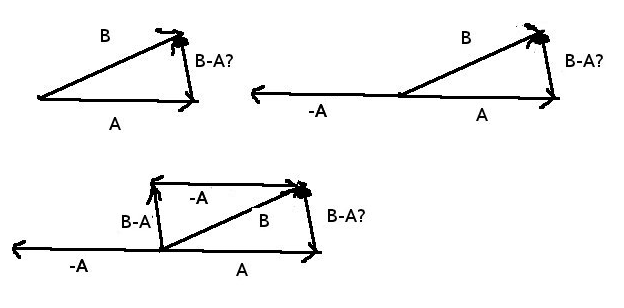
Üstteki resimde 3. şekle bakarsak, katedilen mesafenin hakikaten iki vektör farkı olarak görülebileceğini anlarız.
Devam edelim: Katedilen alanı nasıl hesaplarız.
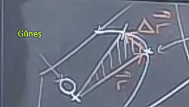
Şekilde çizdiklerimiz yeterince ipucu veriyor, yaklaşıksal olarak bir üçgen oluştu. Alan bir kenarı $\vec{r}$, diğer kenarı $\Delta \vec{r}$ olan paralelogramın yarısı. Paralelogram hesabını yapmayı biliyoruz nasılsa,
$$ \textrm{ $\Delta t$'de Kapsanan Alan } \approx \frac{1}{2} |\vec{r} \times \Delta \vec{r}| $$
ki $\Delta t$ oldukça küçük olmalı.
Ayrıca
$$ \Delta \vec{r} \approx \vec{v} \Delta t $$
O zaman alan
$$ \approx \frac{1}{2} |\vec{r} \times \vec{v}| \Delta t $$
Peki bu alanın zamana sabit oranda olması ne demektir? Alanın $\Delta t$'ye oranlı olması demektir, bu da üstteki formülde $|\vec{r} \times \vec{v}|$ teriminin sabit olması demektir.
- kanunu düşünelim, gezegenin yörüngesinin hep aynı düzlem üzerinde olduğunu söylüyordu. Bu demektir ki $\vec{r} \times \vec{v}$ ile ortaya çıkan ve bu ikisine normal (dik) olan üçüncü vektörün "yönü" hep aynı kalmalıdır. Çünkü iki vektör bir düzlem tanımlar, bu iki vektöre dik olan düzleme de diktir, ve düzlem hiç değişmiyorsa bu vektörün yönü de değişemez.
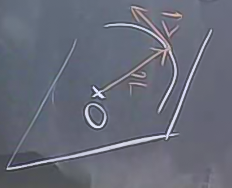
O zaman hem büyüklük aynı, hem yön aynı, o zaman Kepler'in 2. Kanunu $\vec{r} \times \vec{v}$ bir sabit vektör demektir. Ne yönü ne büyüklüğü değişmeyecektir.
Türevler bağlamında bunu şöyle söyleyebiliriz
$$ \frac{d}{dt}(\vec{r} \times \vec{v}) = 0 $$
Türevler normal çarpımlar içine nüfuz ederken Çarpım Kanunu (Product Rule) kullanılıyordu. Çapraz çarpımlar için de aynı kural geçerli, yani üstteki
$$ = \frac{\vec{dr}}{dt} \times \vec{v} + \vec{r} \times \frac{d\vec{v}}{dt} $$
Daha önce türettiğimiz eşitlikleri üsttekilerin yerine koyarsak
$$ =\vec{v} \times \vec{v} + \vec{r} \times \vec{a} = 0$$
Bir vektörün kendisi ile çapraz çarpımı her zaman sıfırdır. O zaman $\vec{v} \times \vec{v} = 0$. Denklemden atılabilir. Geriye kalanlar
$$ = \vec{r} \times \vec{a} = 0$$
Üstteki ifade ne zaman doğru olabilir? Ya da genel olarak iki vektörün çapraz çarpımı ne zaman sıfırdır? Eğer birbirlerine paraleller ise. Bu demektir ki ivme $\vec{a}$ ile pozisyon $\vec{r}$ birbirine paraleldir. Yani Kepler'in 2. Kanunu aslında bunu söylemektedir.
Ve biz bugün yerçekim gücünün $\vec{r}$'e paralel olduğunu biliyoruz, yani mesela güneşin bir gezegeni kendine direk bir yönde çektiğini biliyoruz. Demek ki üstteki ifadenin sıfır olduğu da doğrudur.
Not: Bu arada parallellik hem çekim, hem itme için geçerli olur (her iki durumda da yön paraleldir). Hakikaten de elektriksel alanda parçacıkların çekilmesi ve itilmesi bağlamında da Kepler'in Kanunu aynen işlemektedir.
Soru
Diyelim ki $P$ noktası bir küre (sphere) üzerinde hareket ediyor ve
$$ OP = \vec{r}(t) = x(t)\hat{i} + y(t)\hat{j} + z(t)\hat{k} $$
Hız vektörü $\vec{v}$'nin her zaman pozisyon vektörü $\vec{r}$'ye dik olduğunu $x,y,z$ kordinatlarını kullanmadan ve alttaki eşitlikten faydalanarak
$$
\frac{d}{dt}\vec{a} \cdot \vec{b} =
\frac{d\vec{a}}{dt} \cdot \vec{b} +
\vec{a} \cdot \frac{d\vec{b}}{dt}
\qquad (1)
$$
olduğunu ispatlayin.
Cevap
Eğer $\vec{r}$ ve $\vec{v}$ birbirine dik ise, o zaman $\vec{r} \cdot \vec{v} = 0$ demektir.
Bu arada hatırlayalım ki hız pozisyon vektörünün zamana göre türevidir.
$$ \vec{v} = \frac{d\vec{r}}{dt} $$
Şuradan bir giriş yapalım. Eğer üzerinde olunan kürenin yarıçapı $a$ ise,
$$ \vec{r} \cdot \vec{r} = a^2 $$
Üsttekinin formül (1)'e göre türevini alalım
$$
\frac{d}{dt}\vec{r} \cdot \vec{r} =
\frac{d\vec{r}}{dt} \cdot \vec{r} +
\vec{r} \cdot \frac{d\vec{r}}{dt} = 0
$$
Sağ taraf sıfır çünkü sabit $a^2$'nin türevi sıfır. Buradaki önemli gözlem şudur, eşitliğin sağ tarafı "$t$'ye bağlı olmayan, sabit bir değerdir", bunu söyleyebiliyoruz, çünkü problem bir küre üzerinde gezinildiği bize söylemiş. Bu önemli bir püf noktası, bu bilgi sayesinde türevi alıp sağ tarafı sıfır yapabiliyoruz. Devam edelim
$$ 2 \frac{d\vec{r}}{dt} \cdot \vec{r} = 0 $$
$$ \vec{v} \cdot \vec{r} = 0 $$
Demek ki iki vektör birbirine dik. 2 değeri formülden atıldı, sağ taraf sıfır olduğu için önemli değil.
Soru IJ-4
Bir önceki soruda ispatlananın tam ters yönünü ispatlayın. Eğer $\vec{r}$ ve $\vec{v}$ dik ise, $P$'nin hareketi kesinlikle bir küre üzerinde olmak zorundadır.
Cevap
Biliyoruz ki
$$ \vec{r} \cdot \vec{r} = |r|^2 $$
Türevi alınca
$$ \frac{d}{dt}\vec{r} \cdot \vec{r} = 0 $$
Sağ taraf sıfır oldu çünkü orada bir sabit vardı. Diğer taraftan, eğer diklik olduğunu biliyorsak şu doğru olmalı
$$ \vec{v} \cdot \vec{r} = 0 $$
$\vec{v}$ aynı zamanda pozisyonun türevidir, üstte yerine koyalım
$$ \frac{d\vec{r}}{dt} \cdot \vec{r} = 0 $$
Önceden görmüştük ki
$$
2 \frac{d\vec{r}}{dt} \cdot \vec{r} =
\frac{d}{dt}(\vec{r} \cdot \vec{r})
$$
Bu denklemin sol tarafı iki üstteki formülün sol tarafına benziyor, o zaman
$$ \frac{d}{dt}(\vec{r} \cdot \vec{r}) = 0 $$
Şimdi şunu soralım: Türevi sıfır olan şey nedir? Bir sabittir.
$$ \vec{r} \cdot \vec{r} = c \textrm{ adında bir sabit }$$
O zaman $|\vec{r}| = \sqrt{c}$.
Eğer $\vec{r}$'nin uzunluğu hiç değişmiyor ise, o zaman pozisyon bir küre üzerinde hareket ediyor olmalıdır.
Soru 1I-1
$P$ noktası sabit hız $v$ (dikkat bu vektör değil) ile sabit vektör $a\hat{i}+b\hat{j}$ yönünde ilerliyor. Eğer $t=0$ anında $x_0,y_0$'da isek, pozisyon vektörü $\vec{r}(t)$ nedir?
Cevap
Anahtar kelime "yön". Sabit vektör "yönünde" gitmemiz isteniyor o zaman bu vektörün yönünü bulalım. Onu birim vektör haline getirirsek
$$ \vec{u} = \frac{a\hat{i}+b\hat{j}}{\sqrt{a^2+b^2}} $$
Yön bu. Bu yönde ilerlemek için
$$ \vec{r}(t) = < x_0,y_0 > + \vec{u}vt $$
$$ = < x_0,y_0 > + \frac{(x_0+avt)y+(y_0 + bvt)\hat{j}}{\sqrt{a^2+b^2}}$$
Problem 1I-3
Alttaki pozisyon vektörünün hareketini $t$ $-\infty$ ile $\infty$ arasında giderken tarif edin. [Vektörün ucundan olan] P noktasının xy denklemini verin, ve pozisyon vektörünün tanımladığı bu eğrinin hangi bölümünün üzerinden geçildiğini gösterin.
a)
$$ \vec{r} = 2\cos^2t \hat{i} + \sin^2t \hat{j} $$
Cevap
$$ x(t) = 2\cos^2t $$
$$ y(t) = \sin^2t $$
Şimdi $t$ bazlı denklemlerden $x,y$ bazlı denklemlere geçmek istiyorsak, $t$'yi yoketmeliyiz, o zaman üsttekini bir lineer denklem sistemi olarak görebiliriz. Eğer ikinci denklemi 2 ile çarpıp toplarsak
$$ x + 2y = 2 $$
elde ederiz, çünkü trigonometriden $\cos^2t + \sin^2t = 1$ olduğunu biliyoruz. Elde ettiğimiz bir çizgiyi temsil eder, bu çizginin taranan kısmı $\cos$ ve $\sin$'in nerelerde en büyük olduğuna bağlıdır. Bu iki fonksiyon uç noktalarda birbirinin tersi değerlere sahiptirler, biri 0 iken öteki 1 değerindedir, ve tam tersi, vs. O zaman $x,y$ (0,1) ve (2,0) arasında gidip gelinecektir, $t$ ne olursa olsun.
Şu kod olanları gösterecektir (aradan bazı seçilmiş resimler ile)
xmax = 10.
xmin = -10.
D = 20
x = np.linspace(xmin, xmax, D)
plt.xlim(-10,10)
plt.ylim(-10,10)
for i,t in enumerate(np.linspace(-3., 3., 30)):
if i % 4 == 0: # her dort resimden birini sec
plt.plot (x,((2. - x)/2.))
xx=2*np.cos(t)**2
yy=np.sin(t)**2
plt.quiver(0,0,xx,yy)
plt.plot(xx,yy,'rd')
plt.savefig('1i3_' + str(i) + '.png')
plt.figure()
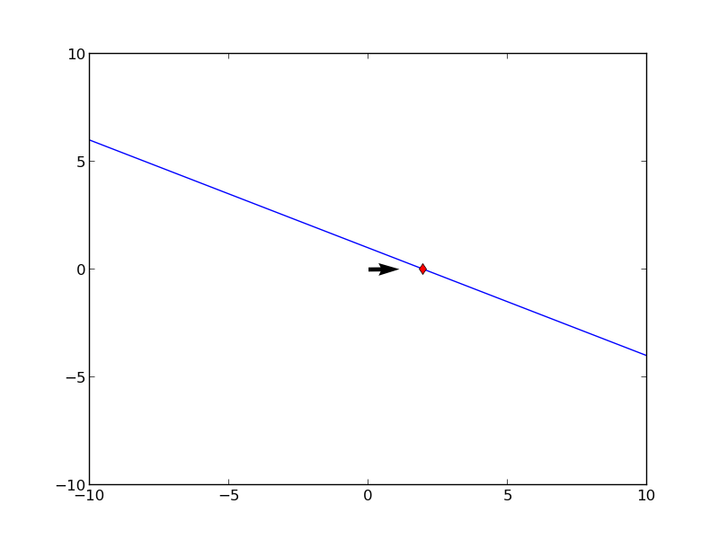 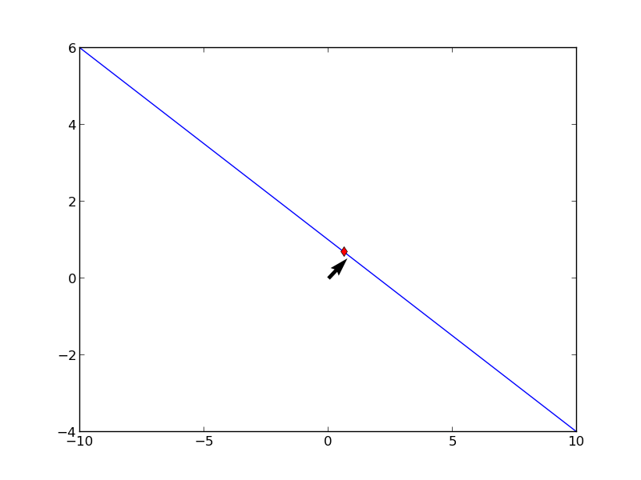 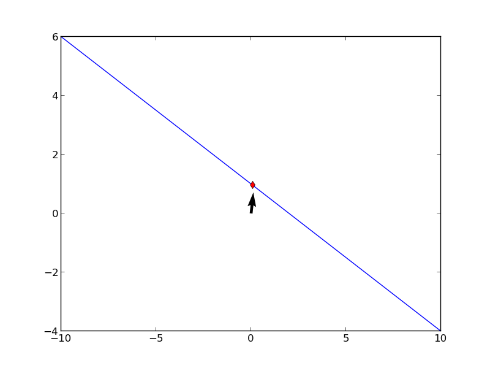 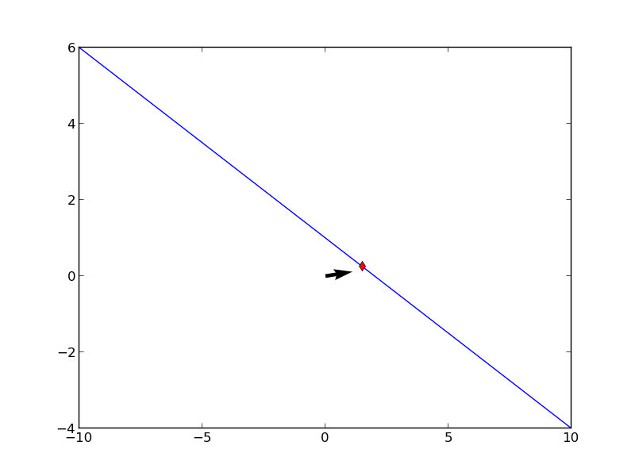 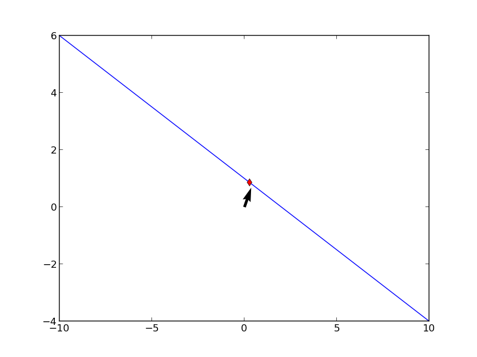 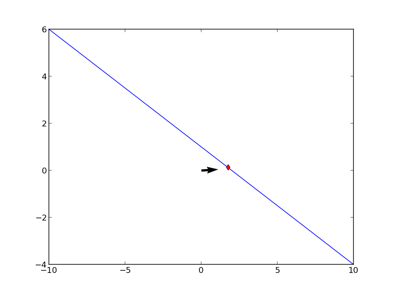
b)
$$ \vec{r} = \cos 2t \hat{i} + \cos t \hat{j} $$
Cevap
$$ x = \cos 2t $$
$$ y = \cos t $$
Bir trigonometrik eşitlik şöyledir
$$ \cos 2t = \cos^2 t - \sin^2t $$
$$ = 2 \cos^2(t) - 1 $$
O zaman
$$ x = 2 \cos^2(t) - 1 $$
$$ y = \cos t $$
Eğer $y$'nin karesini alıp -2 ile çarparsak
$$ x = 2\cos^2(t) - 1 $$
$$ -2y^2 = -2\cos^2(t) $$
ve üstteki $x$ ile toplarsak $\cos$ terimleri iptal olur
$$ x-2y^2 = -1 $$
$$ x = 2y^2 -1 $$
Bu bir parabol. Uç noktaları bulmak için $y$ için -1,0,1 değerlerini koyup sonuca bakarız, ve en uç noktaların (1,1) ve (1,-1) olacağını görürüz.
Eğer $ds/dt = |\vec{v}|$ ilişkisi anlaşılmadıysa, başka bir yönden, biraz daha detaylı bir açıklama şöyle. Katedilen mesafeyi parametrize edilmiş bir $\vec{r}(t)$'nin taradığı sonsuz küçüklükteki parçaların birleşimi olarak görelim.
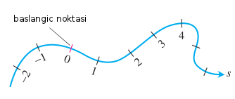
Bu parçalar parametrize halde $dx/dt$, $dy/dt$ ve $dz/dt$ olmayacak mıdır? O zaman sonsuz küçüklükteki $ds$, bir parçanın uzunluğu şöyledir
$$ \sqrt{ \bigg(\frac{dx}{dt}\bigg)^2 + \bigg(\frac{dy}{dt}\bigg)^2 + \bigg(\frac{dz}{dt}\bigg)^2 } $$
$a$ ve $b$ arasındaki $t$ için, bunu entegralini alabiliriz
$$ L = \int_a^b \sqrt{ \bigg(\frac{dx}{dt}\bigg)^2 + \bigg(\frac{dy}{dt}\bigg)^2 + \bigg(\frac{dz}{dt}\bigg)^2 } \mathrm{d} t $$
Dikkatle bakarsak, mesela $dx/dt$ sonucu $\vec{r}(t)$'nin türevini aldığımızda ele geçen $\vec{v}$ içindeki $\hat{i}$'in öğesidir, aynı şekilde $\hat{j},\hat{k}$. O zaman üstteki sonucu $\vec{v}$ formuna da çevirebiliriz:
$$ L = \int_a^b |\vec{v}| \mathrm{d} t $$
Eğer bir uzunluk formülü $s$'i $t$'ye bağlı olarak yazmak istersek, entegralin üst sınırını $t$ yaparız,
$$ s(t) = \int_{t_0}^t |\vec{v(\tau)}| \mathrm{d}\tau $$
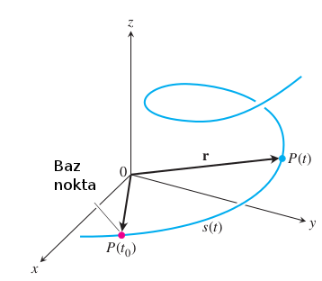
O zaman $ds/dt$ nedir? $s(t)$ formülünün türevidir. Calculus'un Temel Teorisi'ne göre entegral yokolur ve elimize geçen
$$ \frac{ds}{dt} = |\vec{v}(t)|$$
ki bu sonuç mantıklı.
Hız tanımında $t_0$'in hiçbir önemi kalmadığına dikkat, bu başlangıç noktası $s(t)$ için önemliydi, çünkü toplam uzunluk için ona ihtiyaç vardır, fakat bir parçacığın bir yolu katetme oranı (hız) başlangıçtan ne kadar uzakta olduğundan bağımsız.
Soru 1J-7
Türevi alınabilen pozisyon vektörü $\vec{r}(t)$ veriliyor. $t$'nin aynı zamanda $s$ sonucunu vermesinin şartları nelerdir?
Cevap
Şart hız büyüklüğünün yani $|v|=1$ olmasıdır, kontrol edelim.
$$ \bigg|\frac{\mathrm{d} s}{\mathrm{d} t}\bigg| = |v| = 1 $$
$$ ds = dt $$
$$ \int \mathrm{d} s = \int \mathrm{d} t $$
$$ t = s + c $$
$t=0$ iken $s=0$ olduğuna göre $c=0$. O zaman
$$ t = s $$
Egzersizler 13.3, Soru 11, [1] kitabından,
$\vec{r}(t) = 4 \cos t \hat{i} + 4 \sin t \hat{j} + 3t \hat{k}$ eğrisinin uzunluğunu, yani $s$'yi $ 0 \le t \le \pi / 2$ aralığı için bul.
Şu formülü kullanacağız
$$ s(t) = \int_{t_0}^t |\vec{v(\tau)}| \mathrm{d}\tau $$
Önce $\vec{v}$ lazım. Biliyoruz ki
$$ \vec{v} = \frac{d\vec{r}}{dt} $$
O zaman $\vec{r}(t)$'nin türevi
$$ \vec{v} = -4\sin(t)\hat{i} + 4\cos(t)\hat{j} + 3\hat{k} $$
$$ |v| = \sqrt{16\sin^2t + 16\cos^2t + 9} = \sqrt{16(\sin^2t + \cos^2t) + 9} = $$
$$ = \sqrt{16(1) + 9} = \sqrt{25} = 5 $$
$$ s(t) = \int_0^t 5 \mathrm{d} \tau = 5t $$
$$ s(\pi / 2) = 5(\pi/2) $$
Eğri Uzunluğu (Arc Length, Alternatif Anlatım)
Bir $C$ eğrisi var, ve parametrik olarak tanımlı [1, sf. 417],
$$ x = f(t), \quad y = g(t), \quad a \le t \le b $$
Fonksiyonun sürekli türevi alınabilir olduğunu farz edelim, bu durumda $C$ bir pürüzsüz eğri olacaktır. Eğriyi $P_0,P_1,...,P_n$ noktalarında $n$ tane parçaya bölelim, öyle ki $P_k = (f(t_k),g(t_k))$. Bu parçaları düz çizgi ile birleştirirsek,
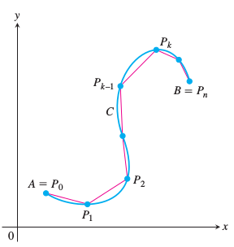
her cizginin uzunlugu
$$ L_k = \sqrt{(\Delta x)^2 + (\Delta y)^2} $$
$$ = \sqrt{[f(t_k) - f(t_{k-1})]^2 + [g(t_k) - g(t_{k-1})]^2 } $$
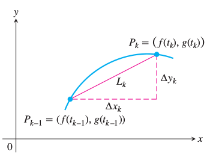
Eğer $\delta t_k$ yeterince ufaksa $L_k$ yaklaşık olarak $P_{k-1}$ ve $P_k$ arasındaki eğrinin uzunluğudur. Ve Ortalam Değer Teorisine göre $[t_{k-1},t_k$ arasında $t_k^\ast$ ve $t_k^{**}$ mevcuttur öyle ki
$$ \Delta x_k = f(t_k) - f(t_{k-1}) = f'(t_k^\ast) \Delta t_k $$
$$ \Delta y_k = g(t_k) - g(t_{k-1}) = g'(t_k^\ast) \Delta t_k $$
O zaman eğrinin uzunluğu tüm bu uzunluklar $L_k$'lerin toplamı
$$ \sum_{k=1}^{n} L_k = \sum_{k=1}^{n} \sqrt{(\Delta x)^2 + (\Delta y)^2} $$
$$ = \sum_{k=1}^{n} \sqrt{[f'(t_k^\ast)]^2 + [g(t_k^{**})]^2} \Delta t_k $$
Üstteki toplam her ne kadar bir Riemann toplamı olmasa da (çünkü $f'$ ve $g'$ değişik noktalarda hesaplanıyorlar) ileri Calculus'taki bir teori onun limitini garantiler, yani üstteki formülden alttaki entegrale geçiş yapılabilir,
$$ \int_{a}^{b} \sqrt{[f'(t)^2 + g'(t)^2} \mathrm{d} t $$
Üç boyutlu eğri için tabii ki üstteki kalıp genişletilir.
Bazen tek boyutlu, klasik, parametrik olmayan durumda, mesela $y = f(x)$ için
$$ L = \int_{a}^{b} \sqrt{1 + \left( \frac{\mathrm{d} y}{\mathrm{d} x} \right)^2} \mathrm{d} x $$
formülünü görebilirsiniz, bu da parametrik formülasyona bağlanabilir, $y(x(t)) = f(x(t))$ ve $x(t) = t$ dersek $\frac{\mathrm{d} x}{\mathrm{d} t} = 1$ olacaktır, formüldeki 1 terimi buradan geliyor.
Örnek
$y = \frac{2 x ^{3/2}}{3}$ fonksiyonunun $(1,2/3)$ ile $(2,\frac{4\sqrt{2}}{3})$ arasındaki uzunluğu nedir [4]?
x = np.linspace(0,3,100)
y = 2*x**(3/2) / 3.0
plt.plot(x,y)
plt.savefig('calc_multi_06_02.png')
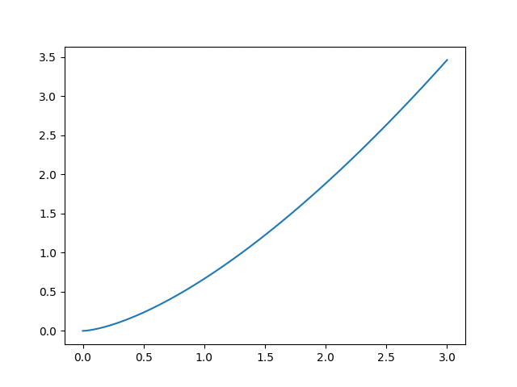
$$ \frac{2 x ^{3/2}}{3}, \quad f'(x) = \frac{3}{2} \frac{2}{3} x^{1/2} = \sqrt{x} = [f'(x)]^2 = x $$
$a=1,b=2$
$$ L = \int_{a}^{b} \sqrt{ 1+ [f'(x)]^2} \mathrm{d} x = \int_{1}^{2} \sqrt{1 + x} \mathrm{d} x $$
$u = 1 + x$, $u(1) = 1$, $u(2) = 3$ ile
$$ = \int_{2}^{3} \sqrt{u} \mathrm{d} u = \frac{u^{3/2}}{3/2} \bigg\vert_{2}^{3} = \frac{2}{3} [3 \sqrt{3} - 2\sqrt{2} ] $$
print (3*np.sqrt(3) - 2*np.sqrt(2))
2.3677252979604417
Kaynaklar
[1] Thomas, Thomas' Calculus, 11. Baski
[2] http://tutorial.math.lamar.edu/Classes/CalcII/ArcLength.aspx
[3] http://www.phengkimving.com/calc_of_one_real_var/12_app_of_the_intgrl/12_06_arc_len.htm
[4] Math 10560, Calculus II, Resources,
https://www3.nd.edu/~apilking/Calculus2Resources/Lecture%2016/SlidesL16.pdf